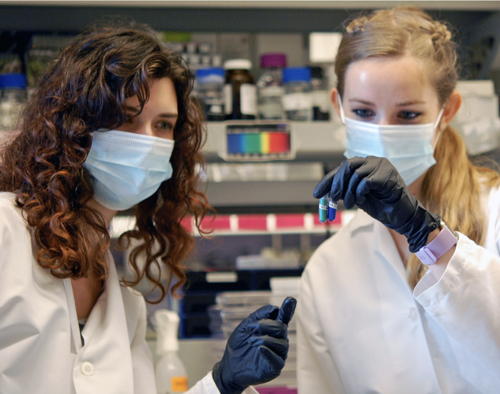
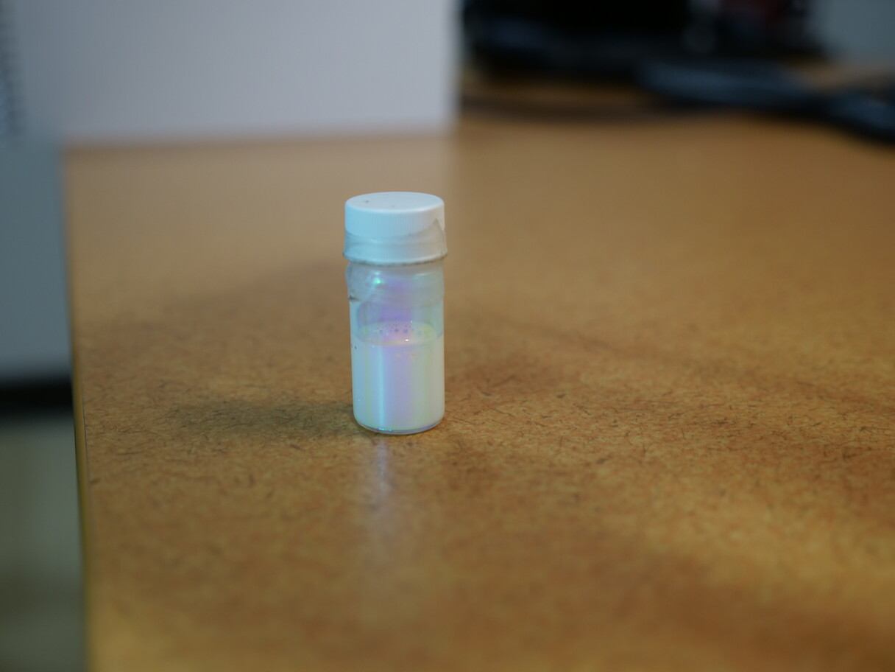

Selected articles, videos, and podcasts about my work
Probing the Physics of Order and Disorder in the Manoharan Lab
The past year has fundamentally changed the way we think
about the world. In the midst of all the upheavals of the ways
we worked...
 Harvard University · Caroline Martin and Amelia Payne · 2021
Harvard University · Caroline Martin and Amelia Payne · 2021

What Birds Know About Color that You Don't
We’ve been using pigments and dyes for thousands of years, but they’re not the whole story...
Veritalk: The Wild Blue Yonder
Victoria Hwang and Annie Stephenson, PhD students in applied physics, use bird plumage...
Harvard University · Anna Fisher-Pinkert · 2018
